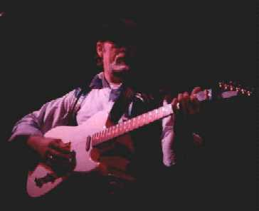
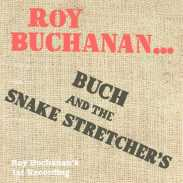
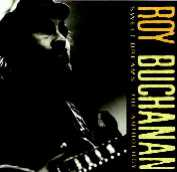

Yeah - my nose is in the sand
A cloud of dust has flew over me
And now I feel like I'm drowin' on dry land

БЬЮКЭНЭН РОЙ (BUCHANAN, Roy) (23 сентября 1939, Озарк, Арканзас - 18 августа 1988, Феэрфакс, Вирджиния).
Американский блюз-, рок- и фьюжин-гитарист, певец. Бьюкэнэн был первооткрывателем в области блюз-рок-гитары. Хотя успеха, достойного его таланта, он так и не достиг, его работы пользуются огромным уважением в кругу специалистов и огромной любовью – у его поклонников.
 Сын священика, Бьюкэнэн
с детства был фанатиком рокабилли.
Профессионально выступать начал в 15 лет. В 18 лет -
первая студийная запись. Акомпанировал на
концертах и записывался в студии с Дэйлом
Хокинсом (Dale Hawkins) (автор “Suzy Q”). В группе Ронни
Хокинса (Ronnie Hawkins) играл вместе с Робби
Робертсоном и Левоном Хэлмом, будущими
основателями группы “Зе Бэнд”(The Band). С 1960 стал
выступать под собственным именем, быстро
завоевывая репутацию уникального виртуозного
гитариста. Эрик
Клэптон (Eric Clapton) и Джефф Бэк (Jeff Beck)
признавали большое влияние, которое оказал на
них Бьюкэнэн. После смерти Брайана Джонса (Brian Jones)
“Роллинг Стоунз”(Rolling Stones) предложили
Бьюкэнэну присоединиться к группе. Он отказался,
сославшись на то, что не сможет быстро разучить
такой объем нового (для него) материала.
Продолжал выступать на клубном уровне, соедин
в одной программе блюз, рок, кантри и джаз. В 1969
акомпанировал певцу Чарли Дэниэлсу (Charlie Daniels) на
записи его альбома для “Полигрэм”(Polygram). Со
своей клубной группой записал материал дл
альбома и предложил его “Полигрэм”. Когда фирма
отказалась, выпустил на собственном лейбле.
Сын священика, Бьюкэнэн
с детства был фанатиком рокабилли.
Профессионально выступать начал в 15 лет. В 18 лет -
первая студийная запись. Акомпанировал на
концертах и записывался в студии с Дэйлом
Хокинсом (Dale Hawkins) (автор “Suzy Q”). В группе Ронни
Хокинса (Ronnie Hawkins) играл вместе с Робби
Робертсоном и Левоном Хэлмом, будущими
основателями группы “Зе Бэнд”(The Band). С 1960 стал
выступать под собственным именем, быстро
завоевывая репутацию уникального виртуозного
гитариста. Эрик
Клэптон (Eric Clapton) и Джефф Бэк (Jeff Beck)
признавали большое влияние, которое оказал на
них Бьюкэнэн. После смерти Брайана Джонса (Brian Jones)
“Роллинг Стоунз”(Rolling Stones) предложили
Бьюкэнэну присоединиться к группе. Он отказался,
сославшись на то, что не сможет быстро разучить
такой объем нового (для него) материала.
Продолжал выступать на клубном уровне, соедин
в одной программе блюз, рок, кантри и джаз. В 1969
акомпанировал певцу Чарли Дэниэлсу (Charlie Daniels) на
записи его альбома для “Полигрэм”(Polygram). Со
своей клубной группой записал материал дл
альбома и предложил его “Полигрэм”. Когда фирма
отказалась, выпустил на собственном лейбле.
В 1970 Эрик Клэптон предложил Бьюкэнону присоединиться к группе “Дэрек энд зе Доминоуз” (Derek And The Dominoes). Бьюкэнэн отказался, сообщив, что у него и так уже уже есть хорошая группа. Телепередача 1970 года, посвященная ему, называлась “Лучший неизвестный гитарист мира”. “Полидор” (Polydor Records) предложили ему контракт, и с 1972 по 1975 Бьюкэнэн записал пять альбомов. Фирма диктовала на записи свои требования, и Бьюкэнэн остался крайне разочарован результатами. В 1976 подписал контракт с “Этлэнтик”(Atlantic Records), выпустил еще три альбома. Однако ситуация повторилась. На несколько лет Бьюкэнэн прекращает записываться, вернувшись к клубным гастролям. “Полидор” и “Этлэнтик” выпускают его записи, лежавшие в архивах. В 1985 подписал контракт с “Эллигейтор” (Alligator). Альбом 1985г. Бьюкэнэн назвал своим «дебютным», поскольку впервые получил свободу отвечать за результат. Большая часть вокальных партий в альбоме исполнена Отисом Клеем (Otis Clay) и Глорией Хардимэн (Gloria Hardiman). Не считая себ сильным вокалистом, Бьюкэнэн всегда приглашал на запись и зачастую гастролировал с профессиональными певцами. Однако эмоциональна сила его исполнения столь глубока и выразительна, что название его «дебютного» альбома “Когда гитара играет блюз” можно читать: “Когда гитара поет блюз”.
Последовательно год за годом выходившие на “Эллигейтор” альбомы показывали постоянный рост мастерства. Главным препятствием к росту популярности был решитальный отказ Бьюкэнэна гастролировать вдали от дома. В 1988 Бьюкэнэн был арестован за появление в нетрезвом виде в общественом месте и умер при невыясненных обстоятельствах в камере предварительного заключения.

Buch and The Snake Stretchers (BIOYA LP, 1971)
My babe (Polydor LP, 1981)Drowning On Dry Land (760k)
Tribute to Elmore James (402k)
When a guitar plays the blues (377k)
Peter Gunn Theme (392k)
Полнейшая дискография Р.Бьюкэннона http://sicel-home-2-19.urbanet.ch:8080/Music/rbuch_disco.html
Фотографии с концерта Р.Бьюкэнона 1987г.: http://www.geocities.com/~bluesarchive/gall1/rb.html
SWEET DREAMS – сайт о Р.Бьюкэнноне: http://sicel-home-2-19.urbanet.ch:8080/Music/rbuch.html
Самые блюзовые альбомы Р.Бьюкэннона – на «Аллигаторе»: http://www.alligator.com/artists/11/index.html
Вместе с Эллингтоном и Растроповичем – в музыкальном зале славы Вашингтона: http://www.crosstownarts.com/CrosstownArts/arts_orgs/wama/whall88.htm
Зарегистрируйтесь (это бесплатно) и слушайте:
http://www.worldwidemusic.com/storefront.html

{kind=link}
{kind=link}
{kind=link}
{kind=link}